Welcome to SongSheet
SongSheet is a browser-based chord chart app built for worship leaders. It reads SongBook Pro .sbp files and ChordPro .cho / .pro files and displays them as interactive chord charts — complete with transposing, capo controls, a full-screen performance mode, and auto-scroll. When you're ready to lead, share your entire set list with your worship team via a single link so everyone walks in with the same songs.
Everything lives in your browser; there is no account to create and no data is sent to any server.

Interface Overview
- Top bar — App title on the left; the ⚙️ Settings button on the right. On mobile, a ☰ menu button opens the sidebar.
- Sidebar (left) — Your song library: search, collections, and import/export controls.
- Main area (right) — The active song's chord chart. Drag and drop song files here at any time.
Importing Your First Song
.sbp or .cho / .pro files directly onto the main content area to import them — no need to use the sidebar button.
The Song Library
The sidebar is your song library. It lists all imported songs and lets you organise them into collections.
Search
Type in the search bar at the top of the sidebar to filter songs by title or artist. The list updates instantly as you type. Clear the search field to return to the full library view.

View Modes
When no search is active, a toggle beneath the search bar lets you switch between three views:
In the All Songs view, a + New Song button appears above the list, letting you create a blank song from scratch instead of importing a file — see Creating a Blank Song.
Collections
Collections are named groups of songs — useful for organising set lists by event, date, or genre.
The collections list shows each collection's name and a song-count badge.
- Create a collection — Click + New Collection in the Collections view, type a name, and press Enter (or click away to confirm). Press Esc to cancel.
- Open a collection — Tap it in the list to open its detail view.
The collection detail view opens when you tap a collection. It shows the collection name, song count, a ← Back link to return to the list, a column of action buttons, and the song list itself.
- Add Songs — Opens a modal to select songs from your library to add to this collection.
- Search UG — Opens the Search for Songs modal and imports the result straight into this collection.
- Rename — Edits the collection name inline. Confirm with ✓ or cancel with ✕ (also Enter / Esc).
- Duplicate — Type a name for the copy (pre-filled with Copy of {collection name}), then press Enter to confirm or Esc to cancel. The copy contains the same songs and appears immediately adjacent to the original in your collections list — add, remove, or reorder songs in it without affecting the original.
- Check for Updates — Only shown for collections that were imported from a Share Link. Checks the original link for changes and applies them automatically, or opens a conflict picker if your local edits would otherwise be overwritten. Shows "Share link expired" if the source link is no longer valid.
- Delete Collection — Asks for confirmation, then removes the collection. The songs themselves are not deleted — they remain in your library.
The song list below the actions is numbered and reorderable: drag the ⠿ handle to change a song's position (on mobile, press and hold briefly before dragging). Tap a song to open it — this closes the detail view. Tap ✕ next to a song to remove it from the collection; the song stays in your library.
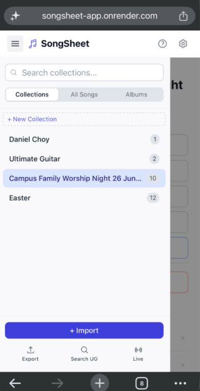

Importing Songs
Import Song Files
SongSheet supports two file formats:
- SongBook Pro —
.sbpand.sbpbackupfiles. Can contain multiple songs in one file. - ChordPro —
.cho,.chordpro,.chopro, and.profiles. One song per file; title, key, capo, tempo, and section markers ({start_of_verse},{start_of_chorus}, etc.) are all read automatically.
There are two ways to import:
- Import button — Click + Import at the bottom of the sidebar and choose one or more files in the file picker.
- Drag & Drop — Drag files from your computer and drop them anywhere on the main content area. The area highlights in blue when a drag is detected.

Handling Duplicates
If an imported song's title matches an existing song in your library, a dialog will appear with three options:
- Replace — Overwrites the existing song with the newly imported version.
- Keep Both — Adds the new song alongside the existing one as a separate entry.
- Skip — Ignores the duplicate and does not import it.

Search for Songs Online
SongSheet can search the web and import chord charts directly, without you needing to find and download a file yourself. Click Search UG in the sidebar to open the Search Songs modal.
Results are pulled from two sources at once, each labelled with a small badge:
- UG Ultimate Guitar — requires a free Firecrawl API key (see below).
- DC Daniel Choy — chord charts from Daniel Choy's blog. No API key required; the artist name is shown under the title for these results.


Viewing a Song
Click any song in the sidebar to open it in the main content area.

Song Header & Info Panel
The top of every song shows the title, artist, and a row of controls. If the song has tempo, time signature, CCLI number, or copyright data, an Info toggle link appears.
- Click Info ▼ to expand a grid showing BPM, time signature, CCLI, and copyright.
- Click Info ▲ to collapse it again.

Chord Strip
Directly below the header is the chord strip — a horizontal bar of chord diagrams for every unique chord in the song. Diagrams show fingering positions on a fretboard.
- Click the Chords ▲ / ▼ toggle to show or hide the chord strip.
- The chord strip updates automatically when you transpose the song or adjust the capo.
- The chord strip is hidden in Lyrics Only mode.

Jumping to a Section
For songs with {c: Section Name} headers, SongSheet gives you a way to jump straight to any section instead of scrolling.
- Desktop — A slim SECTIONS tab is fixed to the left edge of the song view. Click it to slide open a panel listing every section in the song; click a section name to scroll to it. The active section is highlighted.
- Mobile — A horizontally scrollable strip of section pills appears below the song header. Tap a pill to jump to that section; the strip auto-scrolls to keep the active pill in view.
Only sections with a name (i.e. an actual {c:} header) appear in the list.
Font Size & Fit to Screen
A set of floating buttons appears in the bottom-right corner whenever a song is open.
- ⛶ (Fit to Screen) — Automatically scales the font size so the entire song fits within the visible screen height without scrolling. When active, the button turns indigo and the icon flips to show the screen is filled. Tap again to return to manual font sizing.
- + — Increase font size (up to 28 px). Disabled while Fit to Screen is on.
- − — Decrease font size (down to 12 px). Disabled while Fit to Screen is on.
- ▶ (Auto-Scroll) — Starts scrolling the song from top to bottom automatically. See Auto-Scroll for speed controls and full details.
Font size preference is saved across sessions.

Metronome
A metronome button sits in the same floating bottom-right cluster as the font size and auto-scroll controls. It's a visual click only — there is no audio — so it won't interfere with a live mix or recording.
- Tap the metronome icon to turn it on. This also opens the BPM adjuster, with + and − buttons (steps of 5, range 30–300 BPM, default 120).
- On every beat, the app's top header bar flashes briefly — a clear visual cue without any sound.
- Tap Done to collapse the adjuster back to a compact BPM readout button. Tap the readout at any time to reopen the adjuster.
- Tap the metronome icon again to turn it off.
Your BPM and on/off state are remembered the next time you open the app.
Lyrics Only Mode & PDF Download
Enabling Lyrics Only mode (in Settings) hides all chord annotations and the chord strip, showing just the song text. This is useful for singers or worship teams who don't need chords.
When Lyrics Only is active, a ↓ PDF button appears in the song header. Clicking it downloads a clean PDF of the song's lyrics for printing or sharing.
Transposing & Capo
SongSheet lets you change the displayed key of any song and set a capo fret, all without editing the original file.
Transpose
A key dropdown in the song header lists all 12 major (or minor) keys. Selecting a different key instantly transposes every chord in the song. The original key stored in the file is never modified — transpose is non-destructive.

Capo
The Capo control (next to the key dropdown) shows the current capo fret. Use the + and − buttons to increase or decrease it (0 – 7).
- Setting a capo shifts the displayed chords so they reflect what you actually play with a capo fitted at that fret.
- Transpose and capo can be used together: e.g. set the key to G and capo 2 to play in A with open-G chord shapes.
Auto-Scroll
Auto-scroll slowly and smoothly scrolls the song content from top to bottom at a speed you control — useful when performing and you need both hands free.
Auto-scroll is available in both the standard song view and Performance Mode.
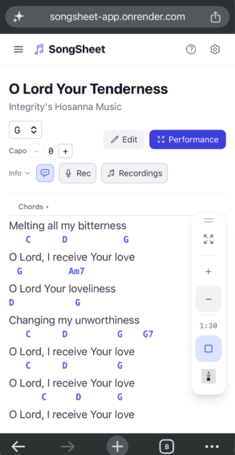

Controls
- ▶ Start — Tap the play button in the floating toolbar (bottom right) to begin scrolling. This automatically opens the speed adjuster shown above.
- Speed + — In the adjuster, increases the target scroll duration by 5 seconds (slower scroll).
- Speed − — In the adjuster, decreases the target scroll duration by 5 seconds (faster scroll). Minimum is
0:30. - Done — Collapses the adjuster back down to the compact toolbar, showing just the duration pill (e.g.
1:30) and the stop button. Tap the duration pill at any time to reopen the adjuster. - ⏹ Stop — Tap the same button (now showing a stop icon, highlighted indigo) to stop scrolling.
Maximum scroll duration is 10:00.
Navigating Between Songs
Move between songs in the current library view (Collections or All Songs) without touching the sidebar.
After navigating, a brief swipe hint appears at the bottom of the screen showing the direction and the title of the song you've moved to.

Performance Mode
Performance Mode opens a full-screen overlay optimised for use on stage — large text, clean layout, and no sidebar distractions.

Keyboard Navigation in Performance Mode
| Key | Action |
|---|---|
↓ | Scroll to the next section |
↑ | Scroll to the previous section |
→ | Go to the next song |
← | Go to the previous song |
Esc | Exit Performance Mode |
Chord Strip
The chord strip is also shown in Performance Mode. Toggle it with the Chords ▲ / ▼ button to show or hide it as needed.
Auto-Scroll in Performance Mode
The same auto-scroll controls (▶ / ⏹, speed + / −) are available in Performance Mode. See Auto-Scroll for full details.
Editing a Song
Click the Edit button in the song header to open the built-in editor. The main content area switches to an edit view with metadata fields at the top and a raw-text content editor below.
![Song editor open — 'Yeshua' with Title, Artist, Key, Capo, Tempo and Time Sig fields, and the raw content textarea showing {c:} section headers and [Chord] inline syntax](images/SS-15.png)
Creating a Blank Song
You don't need a file to start a new song — switch the sidebar to the All Songs view and click + New Song above the list. This opens the same editor described below, but blank: the key defaults to C, capo to 0, and Title is required before you can save (an inline error appears if you try to save with no title).
Click Save to add it to your library, or Cancel to discard it — you'll be asked to confirm if you've already typed anything.
Metadata Fields
The metadata section lets you edit:
- Title and Artist
- Key — chromatic key index used for transposing
- Capo — default capo fret
- Tempo (BPM) and Time Signature
- Song Note — a free-text annotation shown below the title/artist (e.g. "sing in a happy mood" or "xx and yy to sing this"). See Annotations for more detail.
[Chord] tokens and you change the Key field, a confirmation dialog asks whether to Transpose Chords (rewrite every chord in the text to match the new key) or Keep As-Is (only update the stored key label).
CCLI number and copyright are read-only and shown in the song's Info panel when present in the imported file — they aren't editable fields in the editor.
Content Syntax
Song content is plain text with four special markers:
{c: Verse 1}
# Chord before a syllable (no space between chord and word)
El Shad[Am]dai, El Shad[F]dai
# Chord-only line (instrumental)
[Dm] [G] [C]
# Strum pattern attached to a chord
[E]{strum: ///} [F]{strum: /} [A]
# Section-level annotation (on its own line after a section header)
{c: Chorus}
{note: xx and yy to sing this}
# Line-level annotation (on its own line after a lyric line)
Amazing grace how sweet the sound
{note: sing softly here}
{c: Section Name}— Creates a bold section header (e.g. Verse, Chorus, Bridge).[Chord]— Places a chord directly above the following syllable. Put it immediately before the syllable with no space.- A line containing only chord tokens separated by spaces is rendered as a purely instrumental chord line.
[Chord]{strum: pattern}— Appends a strum pattern to a chord label (e.g.E///). Place immediately after the closing]with no space. See Strum Patterns for full details.{note: text}— Attaches an annotation to the element (section header or lyric line) immediately above it. Must be on its own line. See Annotations for full details.
A one-line legend above the content textarea reminds you of the syntax: {c: Section} for headers · [Chord] before a syllable · {note: text} for annotations · [Chord]{strum: ///} for strum patterns.
Fix Headers & Fix Chords
If you paste in a chord chart copied from another site or app, it likely won't already use SongSheet's syntax. Two buttons above the content textarea can convert it automatically.
{c: ...} — e.g. [Verse], ## Chorus, a bare line reading Bridge:, or even likely typos like Corus. Opens a checklist so you can pick which to convert.[Chord] syntax, and re-spaces standalone chord-only lines. Opens the same kind of checklist.In both cases, click Apply to convert only the items you've ticked. If nothing is detected, a toast confirms there's nothing to fix.
Saving and Cancelling
- Save — Commits your changes and returns to the song view.
- Save As — Saves your edits as a brand-new song, leaving the original untouched, then switches to the new copy.
- Cancel — Discards changes. If you've made edits, a confirmation prompt will appear before discarding.
Annotations
Annotations are contextual performance notes you attach to a song — who sings a part, how a section should feel, or any reminder you need while leading. They appear inline in the chord chart and can be toggled on or off.
There are three levels of annotation:
{note: text} on the line immediately after a {c:} header.{note: text} on the line immediately after the lyric.{note:} line always annotates the element immediately above it. Only the first {note:} after an element is consumed — any consecutive {note:} lines are ignored.
Example in the editor:
{c: Chorus}
{note: xx and yy to sing this}
El Shad[Am]dai, El Shad[F]dai
{note: sing softly here}
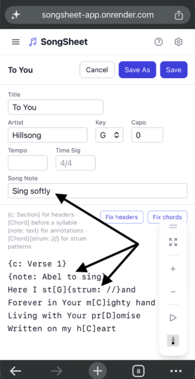
Showing and hiding annotations:
- Click the 💬 speech-bubble button in the song header to toggle all annotations on or off.
- When annotations are visible, the button is highlighted in indigo. When hidden, it returns to grey.
- The toggle state is saved across sessions — it remembers your preference.
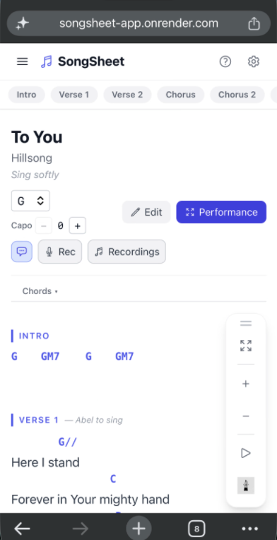
Customising annotation appearance:
Under Settings → Display, Annotations appear as a first-class display element alongside Lyrics, Chords, and Sections. You can customise:
- Font — choose from the same font list used by other display elements.
- Size — set an absolute size in pixels (default: 12 px).
- Colour — pick from a palette or enter a custom colour (default: grey).
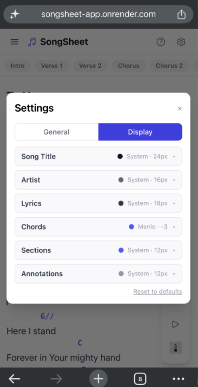
Export behaviour:
- PDF download — Annotations are rendered (song-level in 11 pt italic grey; section/line-level in 9 pt italic grey with an em-dash prefix). Suppressed when annotations are toggled off.
- Presentation PDF — Annotations are rendered and factored into the auto-fit layout so font sizes adjust correctly. Shown in warm brown-tinted grey for readability on projected backgrounds.
- Download .sbp —
{note:}tokens are stripped from the content field (SongBook Pro doesn't support them), but the song-level note is mapped to theNotesTextfield so it's preserved in SongBook Pro. - Share via Link —
{note:}tokens are preserved in the shared song text, so recipients see annotations after importing.
Strum Patterns
A strum pattern lets you annotate how a chord should be played — strumming direction, rhythm, or any shorthand that's meaningful to your team. The pattern is appended directly to the chord label so it appears inline wherever that chord renders.
Syntax: place {strum: pattern} immediately after the closing ] of a chord token, with no space between them.
[E]{strum: ///} [F]{strum: /} [A]
# Renders as:
E/// F/ A
# Chord above lyrics with strum
[G]{strum: ////}Amazing [D]{strum: //}grace
- Each chord on a line can carry its own independent strum pattern — or none at all.
- The pattern can be any text:
///,↓↑↓↑,x,hold, etc. - Strum patterns are exported to Print PDF — the combined chord+strum label is rendered in the chord row.
- There is no separate toggle for strum patterns; they are always shown as part of the chord label.
Exporting Songs
Export lets you save or share selected songs. Start by entering Export Mode.

Download .sbp
Packages the selected songs into a single .sbp file and downloads it to your device. You'll be prompted to choose a filename before the download begins.
The resulting file can be re-imported into SongSheet or opened in SongBook Pro.
Share via Link
Uploads the selected songs to a temporary cloud store and generates a shareable URL — the fastest way to get your set list into the hands of your worship team, band members, or congregation. Anyone with the link can open it in SongSheet and import the songs with one tap, no account needed.
- Collection name — Optional label that appears when the recipient imports the link. Pre-filled if you selected songs from a collection.
- Link expires in — Choose 1, 3, 7, 14, or 30 days. After expiry the link stops working.
- Share lyrics only — Toggle on to strip all chords before uploading; the recipient's session will also open in Lyrics Only mode.

Once the link is created, you have two ways to share it with your congregation:
- Copy the URL — Tap Copy next to the link and paste it into a group chat, email, or bulletin. Anyone who opens it is taken straight to the import screen.
- Share the QR code — A QR code for the link is generated automatically below the URL. Tap Save QR Code to download it as a PNG — the image includes the collection name and expiry date. Print it in your service bulletin, project it on screen, or send it digitally so your congregation can scan it with their phone camera to open the link instantly.
A share link stays "live" for its collection: reopening Share via Link for a collection that already has one switches the modal to update mode, where you can Push Update to overwrite the shared content with your current songs (recipients get a Check for Updates prompt), or tap New Link to generate a separate, independent URL instead.
Presentation PDF
Generates a multi-page PDF of the selected songs, formatted for projection or printing. A background picker appears before the PDF is generated, letting you choose a solid colour, a gradient, or upload a custom image.
Presentation PPTX
Generates an editable PowerPoint (.pptx) slide deck of the selected songs — the same visual purpose as the Presentation PDF, but as a file you can keep tweaking in PowerPoint, Keynote, or Google Slides.
- Background — Pick from a grid of built-in templates, or upload your own image.
- Song title position — Top, Bottom Left, or Bottom Right.
- Font size — 12–48 pt (default 24). This is only a starting point — PowerPoint and Keynote auto-fit text to each slide.
- Show chords — Off by default (lyrics-only slides); tick it to include chords.
Annotations are included or excluded to match your current annotation visibility setting. Export is disabled until the background image has finished loading.
Print PDF
Generates a compact, multi-column chord-chart PDF of the selected songs — designed for printing and handing out to your worship team or band. Unlike the Presentation PDF, Print PDF renders full chord charts (chords above lyrics, section headers, annotations) in a newspaper-style column layout optimised for reading on paper.
Layout options:
- PDF Title — Optional title printed at the top of the page (e.g. "Sunday Service — April 2026"). Leave blank to omit it.
- Columns — Choose 2, 3, or 4 columns. Songs flow newspaper-style: column 1 fills from top to bottom, then column 2, and so on. A new song begins immediately after the previous one ends — no forced page breaks between songs.
- Page Size — A4 or Letter.
Typography & Colours:
Each element of the chart can be independently styled. For each of the five elements below, you can set the font family, size, and colour:
- Song Title — Default: Sans, 12 pt, black. Size range 8–32 pt.
- Lyrics — Default: Sans, 10 pt, near-black. Size range 6–24 pt.
- Chords — Default: Mono, 9 pt, blue. Size range 6–24 pt.
- Section Labels — Default: Sans, 8 pt, grey. Size range 6–18 pt.
- Annotations — Default: Sans, 8 pt, light grey. Size range 6–18 pt.
Font choices are Sans (Helvetica), Serif (Times), and Mono (Courier). Click any colour swatch to open a colour picker.
[Chord]{strum: pattern} annotations in the song content are rendered inline with the chord label in the printed output (e.g. E///). See Strum Patterns.
Importing from a Share Link
When a worship leader shares a SongSheet link with you — whether you're a band member, vocalist, or congregation leader — simply open the URL in your browser. SongSheet will automatically detect the shared set and prompt you to import it.

Settings
Open Settings by clicking the ⚙️ button in the top-right corner of the app. Press Esc to close. Settings has two tabs: General and Display.

Display Tab
Switch to the Display tab to customise how song content is rendered. Each display element — Song Title, Artist, Lyrics, Chords, Sections, and Annotations — has its own collapsible row where you can adjust font, size, and colour independently.
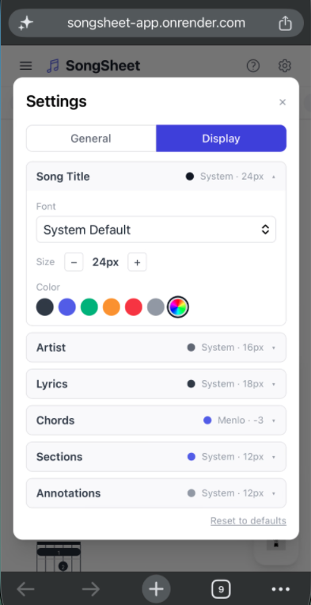
- Font — Choose from System Default, Georgia, Times New Roman, Helvetica Neue, Arial, Courier New, Menlo, or Monaco. Each element can use a different font.
- Size — Lyrics and Chords share a base font size (the same +/- control in the song viewer). Chords use a size offset relative to that base (e.g. −3 means three pixels smaller). Song Title, Artist, Sections, and Annotations each have their own absolute size in pixels (Title default 24px, Artist default 16px, Sections and Annotations 8–32 px).
- Colour — Pick from six preset colours or click the rainbow swatch to open your system's colour picker and choose any custom colour. The selected colour is applied in both light and dark modes (automatically lightened for dark mode readability).
Theme
Choose between Light, Dark, and System. System follows your operating system's appearance preference.
Lyrics Only
Toggles Lyrics Only mode globally. When on, all chord annotations and the chord strip are hidden across every song. A ↓ PDF button appears in the song header for exporting lyrics.
Hide Chord Diagrams
A second toggle, separate from Lyrics Only. When on, it hides only the chord-strip fretboard diagrams — inline [Chord] names above the lyrics still show. Use this if your team wants chord names but not diagrams.
Firecrawl API Key
Required to see Ultimate Guitar results in the Search for Songs feature. Paste your key here; it's stored locally in your browser and never sent to any SongSheet server. Use the Show / Hide button to reveal or mask the key.
Conductor Broadcast License
Follow the Conductor is a paid feature and requires a license key entered here before it becomes available. Paste your key (format SONGBOOK-XXXX-XXXX-XXXX-XXXX) into the field; use Show / Hide to reveal or mask it, or Clear to remove it.
A status message beneath the field tells you where things stand:
- "License active — Conductor Broadcast unlocked" (green) — you're all set.
- "License expired — Conductor Broadcast is locked" (amber) — renew your license to keep using it.
- "Invalid license key" (red) — double-check the key you entered.
- "Enter a license key to unlock Conductor Broadcast." (grey) — no key entered yet.
Library Storage
Shows the number of songs in your library and a visual bar indicating how much of your browser's local storage is in use.
Clear All Data
Permanently deletes every song in your library. A confirmation prompt appears before anything is deleted. This cannot be undone.
.sbp file first if you want to keep them. See Download .sbp.
Live Session
A Live Session is a real-time shared workspace where a worship leader and their team can view and edit the same set list simultaneously — each person on their own device, no account required. The leader controls the set list; everyone else sees changes the moment they're made.
Common uses: finalising a set list during rehearsal with your band, letting a team member transpose a song for their instrument, or having a vocalist follow the same chord chart as the leader during a service.

Starting a Session (Leader)
Click the 🎙 Live Session button at the bottom of the sidebar to open the Live Session modal.

.sbp files (or search Ultimate Guitar) before starting.
The Session View
Once inside a session, the app switches to the Session View — a two-panel layout.
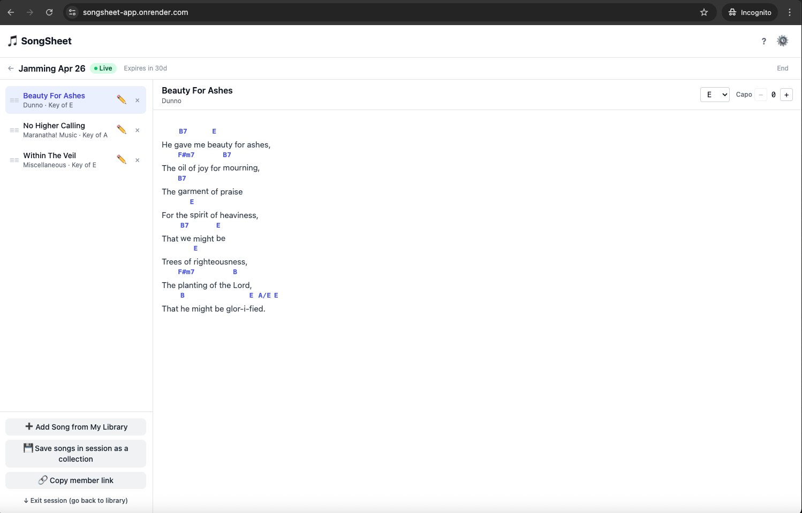
The header bar shows the session name and a pulsing green Live badge while connected. If the session is approaching expiry, a coloured countdown badge also appears.
Editing Songs in a Session
Any participant can edit a song's content directly within the session — useful for on-the-fly lyric corrections or chord adjustments during rehearsal.
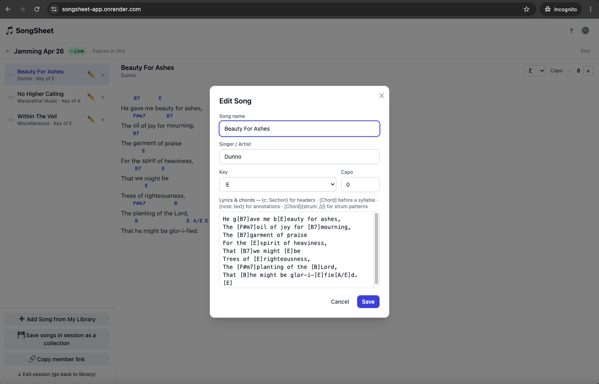
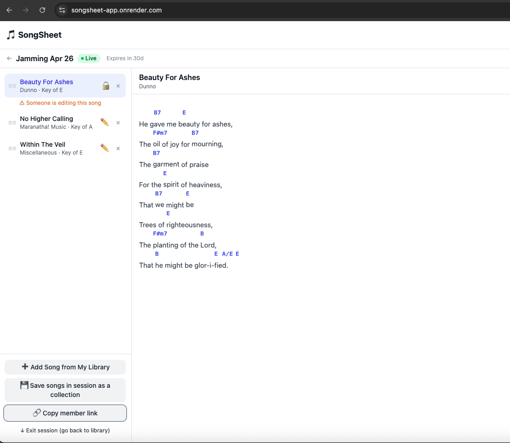
If someone else is already editing a song, its ✏️ button is replaced by a 🔒 icon and a warning appears beneath the row. The lock is released automatically when they save or cancel.
Joining a Session (Member)
There are two ways to join a live session as a member:
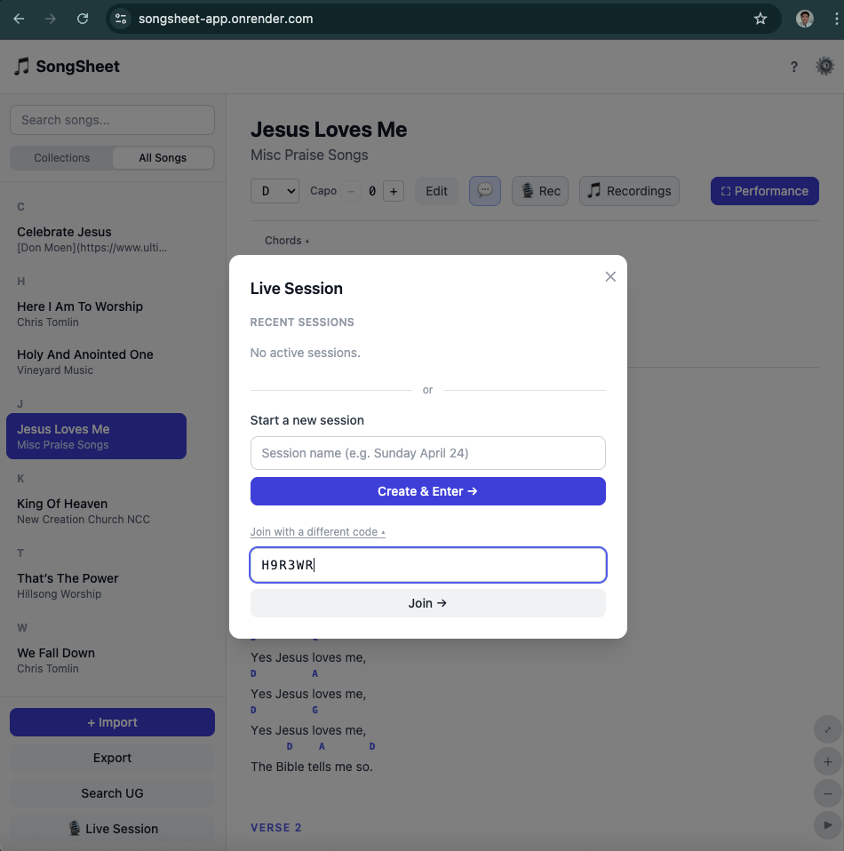
Once joined, you see the same set list and can view any song, transpose for your own instrument, and edit songs (subject to edit locking). As a member you cannot reorder the set list or end the session.
Rejoining Recent Sessions
The Live Session modal tracks sessions you've previously joined or created. Each time you open the modal, it checks which of those sessions are still active and shows them under Recent Sessions. Tap any listed session to jump straight back in — as leader or member, depending on your original role.
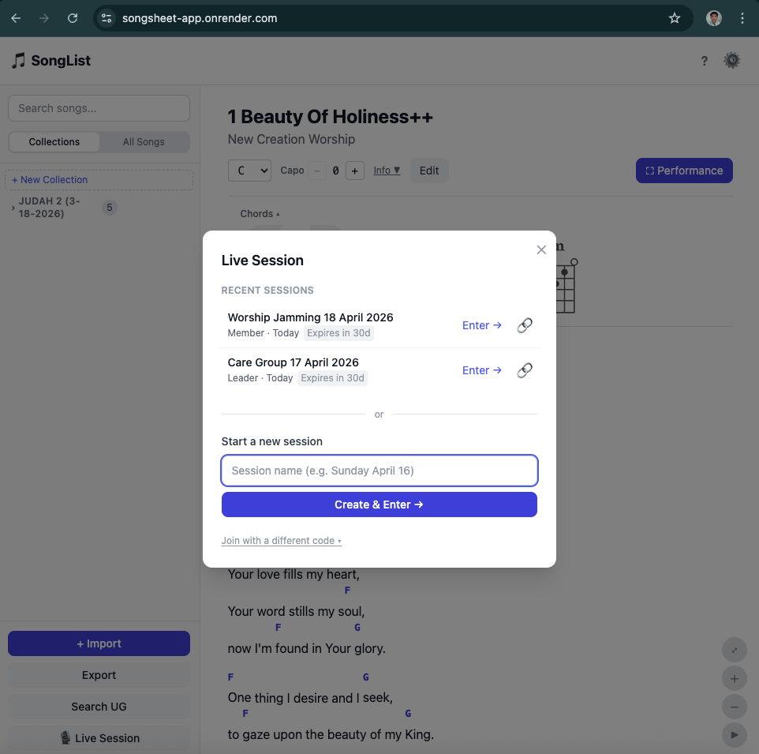
Sessions that have already ended are removed from the list automatically. An amber or red Expires in Nd badge warns you when a session is approaching its expiry date (amber ≤ 7 days, red ≤ 3 days).
Ending a Session (Leader only)
When the session is over, click End in the top-right of the session header. If the set list contains songs that haven't been saved to your library yet, a confirmation modal appears with three choices:
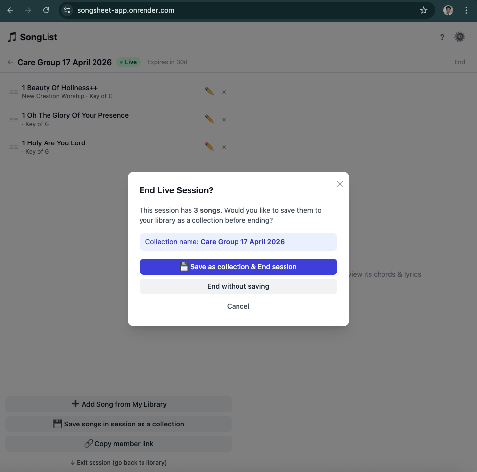
- Save as collection & End session — Adds all songs in the set list to your personal library as a new collection named after the session, then closes the session for everyone.
- End without saving — Closes the session immediately. Songs edited or reordered during the session are not saved to your library.
- Cancel — Returns you to the session without ending it.
You can also save the set list without ending the session at any time by clicking 💾 Save songs in session as a collection in the session footer.
Follow the Conductor
Follow the Conductor is a broadcast feature that lets one person — the conductor — control which song every follower sees, in real time. As the conductor navigates through a set list, each follower's screen switches to the same song automatically. It's ideal for leading a congregation, a choir, or a band where you want everyone on the same page without shouting "turn to song three."
Unlike a Live Session (which is a collaborative editing workspace), Follow the Conductor is a one-way broadcast: the conductor drives, followers watch.
- Coordinator — creates the broadcast session and distributes the member link. May or may not be the same person as the conductor.
- Conductor (Director) — holds the secret conductor link and controls the live broadcast by navigating songs.
- Follower — opens the member link and has their song view driven by the conductor.
Overview
A broadcast is tied to a Collection. When you set one up, SongSheet generates two links:
- Member link — share this publicly with your team. Anyone who opens it can import the songs and follow the live broadcast.
- Conductor link — keep this private. Whoever opens it gains director control over the broadcast.
All active broadcasts are managed from the Broadcasts panel, accessible via the sidebar. The Conductor bar in the song header also shows live status and quick controls whenever a conductor-enabled collection is open.
Setting Up a Broadcast
Broadcasts are created through the Share flow for a collection.
- I'll be conducting this myself — checked by default. Leave it on if you (the coordinator) will also run the broadcast. Uncheck it if you're delegating the conductor role to someone else — you'll receive a private conductor link to forward to them.
- Max followers — cap how many devices can follow at once (default 5).
- Scheduled broadcast time — optional. Set a future date/time and followers will see a countdown timer instead of a "Waiting" message.
Running the Broadcast (Conductor)
Once the session is created, the conductor opens their collection and uses the Broadcasts panel (sidebar) or the Conductor bar (song header) to manage the broadcast.
Starting the broadcast
Click ▶ Start Broadcast in the Broadcasts panel or the Conductor bar. The session goes live instantly — followers who are already waiting will start receiving updates immediately.
The Conductor bar turns red and shows a live follower count: 🔴 Broadcasting · 3 following
Navigating songs
Simply click any song in your set list. SongSheet immediately sends the song to all followers — their screens switch to that song within seconds, with no action needed from them.
Pausing the broadcast
Click ⏹ Stop broadcasting to pause. Followers keep the last song on their screen. You can restart at any time with ▶ Start Broadcast again.
Ending the session
Click End session (with confirmation) to permanently close the broadcast. Followers will see a "Broadcast has ended" message. The session cannot be restarted after this — you'd need to create a new broadcast.
Joining as a Follower
Team members join using the member link shared by the coordinator.
🟢 Following appears in the Conductor bar. Keep the browser tab open — polling pauses when the tab is hidden and resumes when you switch back.
Waiting for a broadcast
If you join before the broadcast starts, a Waiting for broadcast banner appears across the top of your screen showing the collection name, the scheduled time (if set), and a countdown. If the conductor has already navigated to a song, a preview of the opening song is shown.
Songs not in your library
If the conductor switches to a song you didn't import (for example, a song added to the set after you joined), you'll see a notification: "Conductor switched to a song not in your library." Ask the coordinator to reshare the updated member link and re-import.
Stopping or leaving
Click Stop in the Conductor bar to stop following. Your songs remain in your library. You can rejoin at any time by opening the member link again and clicking Rejoin & follow live.
When the broadcast ends
A "Broadcast has ended" message appears. Your imported songs stay in your library — click Forget broadcast in the Broadcasts panel to remove the broadcast entry while keeping the songs.
Scheduled Broadcasts
Set a Scheduled broadcast time when creating the broadcast if you want followers to know when it will start in advance — useful for Sunday services or rehearsals at a fixed time.
- Followers who join early see a countdown to the scheduled time instead of a generic "Waiting" message.
- Followers only start polling for updates once the scheduled time is within 30 minutes — polling starts quick, then backs off gradually to about every 5 minutes while still waiting, and switches to live-mode polling once the conductor starts broadcasting.
- The scheduled time is informational only — the conductor can start earlier or later by clicking ▶ Start Broadcast whenever they're ready.
Recording
SongSheet can record your singing or playing directly in the browser using your device's microphone. Recordings are saved per song and stored locally on your device — nothing is uploaded to any server.
Recording a Song
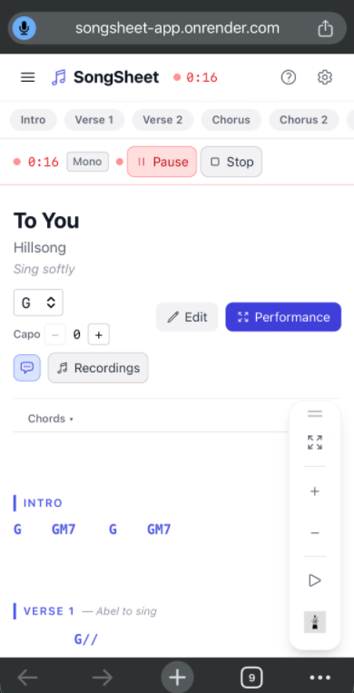
Pause & Resume
While recording, click ⏸ Pause to freeze the recording and timer. A yellow ▶ Resume button appears — click it to continue recording from where you left off. The timer picks back up and the single recording file will contain the full session including the paused segment.
Managing Recordings
Click the 🎵 Recordings button in the song header to open the recordings panel. It lists every recording for the current song, sorted newest first. Each entry shows the name, date, and file size.
- Play — Click ▶ Play to listen back. A built-in audio player appears with play/pause, a seek slider, current time / total duration, and a playback speed selector (0.5× – 2×).
- Download — Click ↓ Download to save the recording to your device. SongSheet converts it to a .wav file (PCM 16-bit) for maximum compatibility. If conversion isn't supported by your browser, the raw WebM file is downloaded instead.
- Rename — Click the ✏️ pencil icon next to a recording to edit its name in place.
- Delete — Click Delete, then confirm the prompt. The recording is permanently removed.
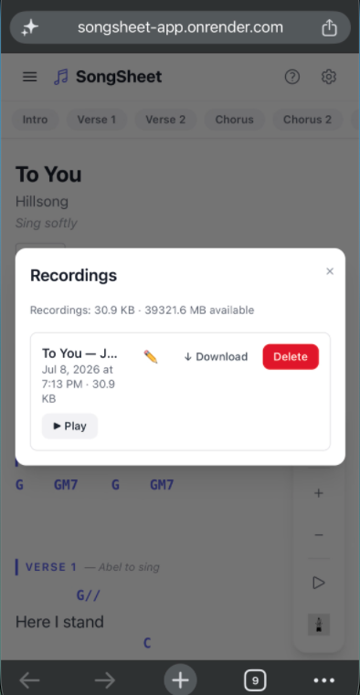
A storage indicator at the top of the panel shows how much space your recordings are using.
Audio Playback Controls
The built-in audio player lets you review a recording without leaving the app:
- Play / Pause — Round indigo button to toggle playback.
- Seek — Drag the slider to jump to any point in the recording.
- Playback speed — Choose from 0.5×, 0.75×, 1×, 1.25×, 1.5×, or 2×. Useful for practising a difficult passage at half speed.
- Time display — Shows current position and total duration.
Albums
Once you have recorded songs in SongSheet, you can bundle them into a shareable Album — a curated playlist published to the cloud that anyone with the link can stream. Albums let you share a polished set of recordings (a worship set, a rehearsal demo, a home recital) with bandmates, family, or your congregation.
Overview
Albums are accessed from the Albums view — click Albums in the three-way view toggle beneath the sidebar search bar (alongside Collections and All Songs). The panel shows all albums you've created on this device. From here you can create a new album or open an existing one.
Creating an Album
Publishing
When you're happy with the track list, click Publish Album. SongSheet will:
- Create the album record on the server with your title, artist, and cover.
- Upload each audio track in order — a progress bar shows the current track and how many remain.
- Save the album locally on your device so you can manage it later.
After publishing, the album opens automatically in the Albums panel. You'll see a shareable link you can copy and send to anyone.
Managing Albums
Once published, your album appears in the Albums panel. Click an album card to open the album detail view, where you can:
- Copy share link — share a URL that anyone can open in their browser to stream the album.
- View tracks — see the complete track listing with durations.
- Delete album — permanently removes the album from the server and from your device. This frees up your free-plan slot for a new album.
Tips & Keyboard Shortcuts
All Keyboard Shortcuts
| Key(s) | Context | Action |
|---|---|---|
→ |
Song view | Go to next song |
← |
Song view | Go to previous song |
→ |
Performance Mode | Go to next song |
← |
Performance Mode | Go to previous song |
↓ |
Performance Mode | Scroll to next section |
↑ |
Performance Mode | Scroll to previous section |
Esc |
Performance Mode | Exit Performance Mode |
Esc |
Settings | Close Settings panel |
Enter |
New Collection | Confirm collection name |
Esc |
New Collection | Cancel new collection |
Worship Leader Tips
- Build a set list collection for each service — Create a collection per Sunday (e.g. "Easter Sunday") and add your songs. Navigate through the set live with → / ← or a swipe.
- Share your set with the whole team — Use Export → Share via Link to send a URL or QR code to your worship team, band, or congregation. Copy the link and paste it into a group chat, or save the QR code and print or project it so people can scan it with their phone. Either way, one tap brings them to the import screen — no app download required.
- Share lyrics only for singers and congregation — When sharing, toggle Share lyrics only so chord-free lyrics are what the recipient sees. Ideal for singers who don't need chord charts.
- Transpose on the fly for different vocalists — Transpose is non-destructive. If your lead singer needs a different key on the day, change it live without altering the stored song.
- Use Fit to Screen before leading — The ⛶ button scales the song to fill your screen so you can read it without scrolling, keeping your eyes up as much as possible.
- Dial in Auto-Scroll at rehearsal — Set the scroll speed for each song during the week so it flows naturally when you're leading.
- Generate a Presentation PDF for the projector team — The Presentation PDF export gives your visuals team a ready-to-use slide deck, styled with your chosen background.
- Export a backup .sbp before the service — Save your set list as a
.sbpfile in case you need to restore it quickly, especially at a venue with unreliable internet.